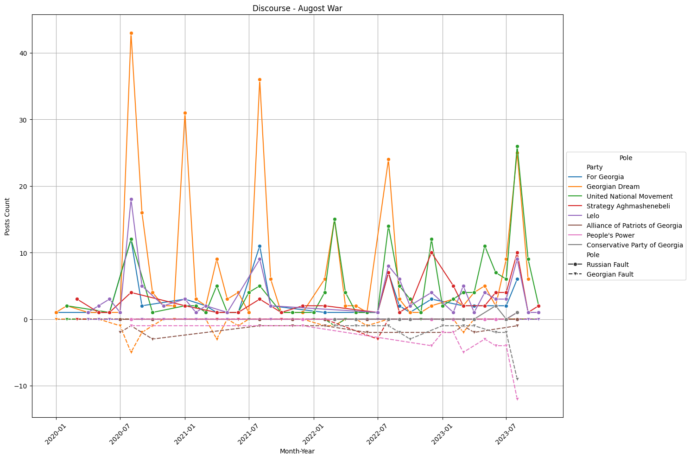
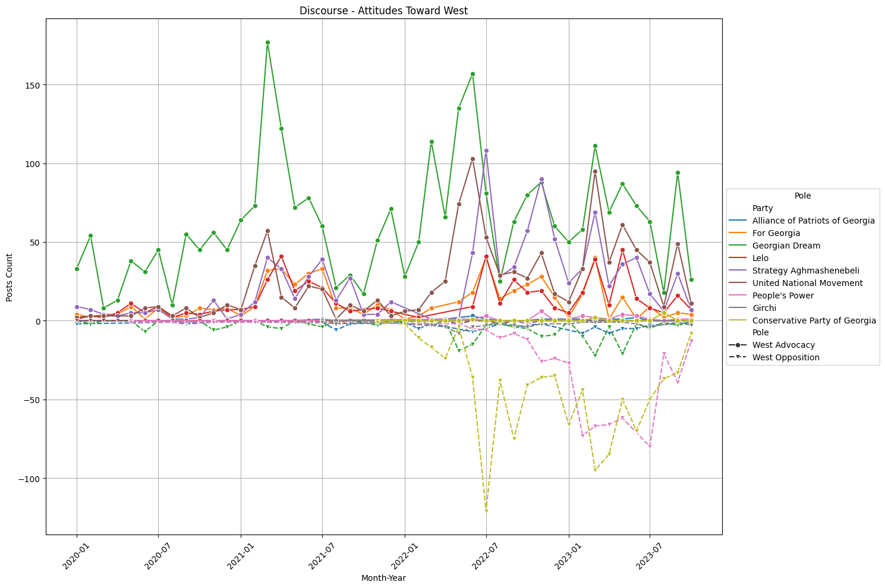

Analysing Political Polarisation in Georgia through Social Media: Insights from Large Language Models (LLMs)
2024
This publication has been produced with the assistance of the Center for Strategic Research and Development of Georgia (CSRDG), within the framework of the European Union and Konrad-Adenauer-Stiftung funded project “Civil Society STAR Initiative: CSOs as Sustainable, Transparent, Accountable and Resilient Development Actors in Georgia”. Its contents are the sole responsibility of publication authors and do not necessarily reflect the views of the European Union and the Konrad-Adenauer-Stiftung.
The project is implemented by the Consortium led by the Konrad-Adenauer-Stiftung (KAS) and composed of the following CSOs: Center for Strategic Research and Development of Georgia (CSRDG), Civil Society Institute (CSI), Center for Training and Consultancy (CTC), Education Development and Employment Center (EDEC), and Institute for European Politics (IEP).
This report presents the findings from the final phase of our study on political polarisation in Georgia, using social media as a lens. Building on the initial phase, which demonstrated the effectiveness of large language models in analysing social media posts over three months in 2023, and four polarisation discourses, this final phase expanded the analysis to include 150,000 posts from January 1, 2020, to October 30, 2023, and 11 discourses. These posts, collected from 150 different political sources, including parties and individual politicians, offer insights into the nature of political discourse over this period.
In this phase, advanced Large Language Models (LLMs) were employed for text classification, improving our ability to categorise and understand polarisation discourses in Georgia. The study focused on how different political groups engage with these discourses, aiming to provide a clearer picture of the factors driving polarisation.
The results of this study shed light on the patterns and characteristics of political polarisation in Georgia, revealing the specific narratives that have influenced political discussions. This analysis aims to contribute to the understanding of political communication in Georgia, especially in the context of the country's interactions with the European Union.
This report is intended to inform policymakers, social media analysts, and researchers. It offers insights into the nature of political polarisation in Georgia, with the goal of supporting efforts to address these dynamics.
This study highlights the practical applications of our findings, showing that employing advanced Large Language Models (LLMs) for analysing political discourse can offer valuable insights into polarisation. Our research indicates that this approach is not only viable but beneficial for visualising and understanding the complexities of political polarisation. Such insights are crucial for developing strategies aimed at mitigating these divides.
Introduction
In recent years, the political landscape of Georgia has increasingly been influenced by the dynamics of social media. This report details a study that delves into these dynamics, specifically focusing on the aspect of political polarisation as reflected through social media channels. The relevance of this study is underscored by Georgia's ongoing efforts to align with the European Union's standards and practices, a key aspect of which involves understanding and addressing the factors that contribute to political division.
The significance of social media in shaping public opinion and political narratives in Georgia cannot be overstated. As such, this study aims to provide an analytical perspective on the nature of political conversations and debates occurring on these digital platforms. By doing so, it seeks to uncover the underlying patterns and trends that characterise political polarisation in the country.
Key to this analysis is the exploration of the different narratives and viewpoints that emerge from Georgia's political entities, including both parties and individual politicians. The study is not limited to identifying these various discourses but also aims to trace their development and influence over a specified period. Such an understanding is pivotal for stakeholders involved in Georgian politics, offering insights that could inform strategies to foster a more unified political environment conducive to the country's EU aspirations.
In this report, we outline the methods used in our analysis, present our key findings, and discuss their implications. The objective is to contribute meaningfully to the discourse surrounding political polarisation in Georgia, providing a resource for policymakers, academics, and others interested in the intersection of politics, social media, and international relations.
The context of political polarisation in Georgia is deeply intertwined with the nation's aspirations for European Union integration. Since gaining independence, Georgia has embarked on a transformative journey, to align its political, economic, and social structures with those of the European Union. This path towards integration is not just a foreign policy objective but is also enshrined in the Georgian Constitution, reflecting a commitment that spans the political spectrum.
However, the road to EU integration is multifaceted and challenging, with political polarisation emerging as a significant obstacle. Political polarisation, defined by the increasing ideological distance between political entities and the public, can hinder constructive dialogue, impede consensus-building, and challenge democratic processes. In the context of Georgia's EU aspirations, such polarisation can potentially affect the nation's ability to meet the EU's democratic standards and criteria for membership.
The impact of political polarisation in Georgia extends beyond parliamentary debates and political rallies; it is vividly manifested on social media platforms. These digital arenas have become battlegrounds where political narratives and counter-narratives are continuously shaped and reshaped. Social media's role in amplifying polarisation is particularly noteworthy given its widespread use in Georgia for political discourse and public engagement.
The European Union's perspective on Georgia's political polarisation is twofold. Firstly, it views reducing polarisation as essential for strengthening democratic institutions and governance in Georgia, which are prerequisites for EU integration. Secondly, the EU considers the management of political polarisation as critical for ensuring stability and harmony within its potential future member states. Consequently, understanding the nuances of this polarisation becomes pivotal for both Georgia and the EU.
The methodology for this study was structured to methodically capture and analyse the nuances of political polarisation in Georgia through social media. The process was segmented into several key stages:
Political parties covered in the study:
The selected discourses include:
The methodology, combining human expertise with advanced computational tools, allowed for a thorough examination of the political polarisation landscape in Georgia, offering both quantitative and qualitative insights into the evolving nature of political discourses and narratives.
The first heatmap graph offers a visual representation of the distribution of posts across different poles of polarisation discourse. In this graph, each block's colour intensity correlates with the volume of posts: darker shades indicate a higher number of posts published by a party within a specific polarisation pole. The total sum of posts classified under each pole is also provided. This graphical representation facilitates a high-level overview of the areas where political parties are most actively engaged, highlighting the intensity of their participation in various discourses.
In the following section, three types of plots are provided for each polarisation discourse:
For more visualisations please visit interactive web application [ link ].
The study of the role oligarchs play in Georgia's political scene, especially the views towards Bidzina Ivanishvili between 2020 and 2023, shows a lot of action and involvement from the main political parties. In the early years of 2020 and 2021, the Georgian Labour Party was at the forefront of the opposition to Ivanishvili, engaging a lot of people with their posts. However, it's interesting to see that the Georgian Dream party, even with fewer posts supporting Ivanishvili, managed to get a lot more positive reactions, suggesting they might have a wider or more active group of supporters. Moving into 2022, the United National Movement took over the leading role in challenging Ivanishvili, both in the sheer number of posts and the level of engagement they received, pointing to a change in the political dynamics and where the main resistance was coming from.
What stands out from this analysis is the clear gap in positive responses between the parties and their stance on Ivanishvili. For example, in 2021, Georgian Dream's fewer supportive posts got more than 7.9 million positive reactions, overshadowing the opposition's numbers by a large margin. This difference in responses sheds light on the intricate nature of Georgia's political conversations, showing that the amount of posts doesn't always match up with how much or how strongly people respond. This gives us a closer look into the political division caused by oligarchic influences in Georgia, focusing on the depth and range of people's reactions rather than just how much they're talking.
The study of how political narratives in Georgia assign blame for increasing political division reveals two main viewpoints: those criticising the government and those criticising the opposition. Throughout this period, the United National Movement (UNM) consistently pointed fingers at the government, reaching a peak in 2022 with 728 posts that attracted a mix of positive and negative attention. This ongoing criticism highlights the UNM's role as a key opponent of government policies, indicating significant disagreements in the political conversation.
On the other side, the Georgian Dream and People's Power were the most vocal in criticising the opposition, with the Georgian Dream leading this narrative for three consecutive years. In 2021, their messages received over 7.9 million positive engagements, a number that stands out within this debate, showing not just a high level of activity but also significant interaction, suggesting the party's success in engaging or appealing to a wide audience. In 2023, People's Power took the lead in opposing the opposition, with 785 posts, although these did not engage people as much as Georgian Dream's efforts in previous years. This change points to evolving dynamics in Georgia's political discussions, with different parties becoming more prominent in directing the conversation about political divisions.
This examination sheds light on the specific roles and tactics of the leading political parties in Georgia's politically divided environment, highlighting the fervour and involvement in discussions about the responsibilities of government and opposition in deepening these divides.

The conversation about the 2008 war between Russia and Georgia, especially in terms of who was at fault, shows an active and changing pattern of engagement. Early on, the Georgian Dream party was particularly vocal in blaming Russia, drawing significant attention and suggesting their viewpoint had wide appeal. Interestingly, this party also presented views blaming Georgia, though less frequently, showing a more complex or varied take on the war's events.
As time went on, the United National Movement became the main group discussing Russia's faults, in line with their political views and the historical backdrop. On the other hand, People's Power and the Conservative Party of Georgia stepped up as the main voices in 2023 and 2022, respectively, pointing towards Georgian responsibility, but these perspectives didn't capture as much engagement as those blaming Russia. This change might indicate shifts in political focus, strategies, or how the public feels about the war's impact.
This analysis reveals a clear lean towards narratives that fault Russia, with a smaller yet persistent conversation that suggests Georgian responsibility. These dynamics highlight how the 2008 war remains a key topic in Georgia, underlining the complexities of how history is seen and the influence political parties have in driving and engaging with these discussions.

The discussion about Georgia's foreign policy direction, choosing between Pro-Western and Anti-Western stances, shows a clear divide and engagement across political lines. The Georgian Dream party consistently pushed for closer ties with the West, with their efforts peaking in 2022 with 938 posts, highlighting their commitment to Western integration despite a slight dip in activity in 2023. This shows their deliberate effort to gather support for this path.
In contrast, the Conservative Party of Georgia took a leading role in opposing Western alignment in the latter two years, with a noticeable jump in posts from 2023 to 538, signalling a strong push against Western orientation. This rise in anti-Western sentiment may suggest a widening gap in public and political opinion on Georgia's foreign policy choices. The level of engagement, especially the support for Georgian Dream's pro-Western stance, points to the intense debate over Georgia's place in global geopolitics and the influence of political parties in steering this conversation.
Through this lens, the analysis highlights a polarised view on foreign policy, with significant discussions on whether to pursue closer relations with the West or oppose them. The sharp difference in the number of posts between advocates for Western integration and those against it illustrates the deepening fault lines and changing dynamics in how Georgia navigates its geopolitical ambitions and challenges.
The investigation into pro-West narratives within Georgian political discourse uncovers a multifaceted picture of engagement, reflecting a diversity of views and the complexity of Georgia's orientation towards Western alliances. The analysis reveals that pro-West posts, both those receiving high positive and negative engagement, predominantly emanate from a limited range of political parties. This suggests that support for Western integration is a polarising issue, closely tied to specific political ideologies and agendas within the country.
Posts with high positive engagement tend to celebrate Western democratic values, emphasising the benefits of integration with European and North American institutions for Georgia's democracy, economy, and security. These narratives often highlight the importance of aligning with the West as a strategic choice for ensuring Georgia's progress and stability, invoking themes of liberty, human rights, and economic development. On the other hand, pro-West posts that attract high negative engagement reveal a contentious debate within Georgian society. Critics within these discussions frequently question the sincerity or effectiveness of Western support, the conditions attached to Western integration, or the potential loss of national identity and autonomy. Yet, even within this critical engagement, the underlying premise of a Westward orientation is not entirely dismissed but rather debated in terms of its terms and implications.
Throughout the period analysed, the persistence and evolution of pro-West narratives with significant engagement levels underscore the salience of Western integration in Georgia's political and public discourse. While the support for Western ties is clear among certain parties and segments of the population, the nuances within this support reflect a broader conversation about what such an orientation means for Georgia's future. This dialogue is characterised by both optimism for the potential benefits of closer ties with the West and caution about the challenges and compromises these ties may entail.
The analysis of anti-West narratives within the dataset reveals a complex landscape of engagement across different political parties in Georgia, characterised by varied responses to the discourse opposing Western integration. Notably, the most engaged anti-West posts, both positively and negatively, often originate from a select few parties, suggesting a polarisation within the political spectrum concerning Georgia's orientation towards Western alliances.
In terms of content, posts with the highest negative engagement frequently criticise Western policies or influence in Georgia, framing them as detrimental to the nation's sovereignty or traditional values. These narratives may leverage geopolitical events, cultural debates, or economic policies to argue against closer ties with Western entities. Conversely, the positively engaged posts within the anti-West discourse tend to emphasise national autonomy, cultural preservation, and the importance of balancing international relations with maintaining Georgia's unique identity and interests. While critical of the West, these posts might also call for a nuanced approach to diplomacy, suggesting that alignment with Western values or policies should not be pursued uncritically or at the expense of Georgia's autonomy and welfare.
Across the years, the persistence of anti-West narratives with high engagement levels highlights a significant segment of the Georgian population that is sceptical of closer ties with Western institutions. This scepticism spans across multiple parties, though it is more pronounced within certain factions, indicating a political strategy that capitalises on nationalistic sentiments and concerns over sovereignty. The discourse's evolution or consistency over the years could reflect broader geopolitical shifts, domestic policy debates, or changes in the public's perception of Western influence in Georgia.

The discussion on Georgia's foreign policy stance towards Russia showcases the shifting political and ideological lines within the nation. The United National Movement (UNM) has been at the forefront of criticising Russian influence, with their efforts intensifying over the years—jumping from 206 posts in 2021 to 659 in 2023. This increase underlines the UNM's focus on opposing Russian influence, a stance that ties into their larger goal of reinforcing Georgian sovereignty and pursuing closer ties with the West.
On the flip side, support for Russia within Georgia presents a diverse scenario. Initially, the Alliance of Patriots of Georgia and Georgian Dream participated in pro-Russian narratives. Later, People's Power and the Conservative Party of Georgia stood out for their Russian support in 2023 and 2022, though their presence was smaller compared to the anti-Russian messages. The volume of posts criticising Russian influence, particularly from the UNM, and the mixed reactions these received, highlight the intense debate over Georgia's foreign policy. This debate separates those pushing for stronger connections with the West from those seen as leaning towards Russian interests.
This analysis points to a deeply divided and increasingly vocal debate over Georgia's direction in foreign policy, underlining significant divides in political and public opinion about the country's strategic path. The growing focus on anti-Russian sentiments, mainly driven by the UNM, indicates a strong movement against Russian influence, mirroring larger geopolitical tensions and the lasting effect of past conflicts on Georgia's current political and foreign policy discourse.
The analysis of anti-Russia narratives within Georgian political discourse underscores a critical aspect of the nation's geopolitical stance and public sentiment, reflecting deep-seated concerns and opposition towards Russian influence and policies. The engagement patterns with these narratives, both positive and negative, reveal a wide consensus among several political parties, indicating a broad-based scepticism and resistance against Russia's regional ambitions and its impact on Georgia's sovereignty and territorial integrity.
Posts with the highest positive engagement in the anti-Russia category often articulate concerns about Russian geopolitical manoeuvres, historical grievances, and the ongoing conflicts in regions recognized internationally as part of Georgia but currently under Russian control or influence. These narratives emphasise the importance of national security, the integrity of Georgian territory, and the need for international support to counter Russian aggression. They resonate with calls for solidarity, the protection of human rights, and the reinforcement of Georgian national identity against perceived external threats.
Conversely, posts that attract high negative engagement within the anti-Russia discourse tend to focus on the complexities of Georgian-Russian relations, including economic dependencies, the nuanced realities of conflict zones, and the challenges of diplomatic engagement with Russia. While these posts share a critical stance towards Russia, the debate often centres on the best strategies for addressing these challenges, balancing national security concerns with the realities of economic and social ties between the two countries.
Throughout the analysis period, the enduring focus on anti-Russia narratives with significant engagement levels highlights the centrality of Russian relations in Georgia's political and public discourse. The nuanced differences in engagement suggest a society grappling with its complex relationship with Russia, united in its opposition to Russian policies perceived as aggressive or imperialistic, yet divided on the best path forward for Georgia's future security, prosperity, and territorial integrity.
The exploration of pro-Russia narratives within Georgian political discourse highlights a nuanced and often contentious aspect of Georgia's geopolitical dialogue. This analysis reveals that while the support for Russia and its policies may be less vocal or mainstream compared to pro-Western sentiments, it nonetheless occupies a significant niche within certain political parties and segments of Georgian society. The engagement patterns for these narratives, both positive and negative, provide insight into the complexity of Georgian attitudes towards Russia.
Pro-Russia posts with the highest positive engagement often articulate a vision of Georgia-Russia relations that emphasises historical ties, cultural connections, and potential economic benefits. These narratives sometimes critique the West's influence in Georgia, proposing that closer relations with Russia could offer alternative pathways to security and prosperity. They appeal to a sense of regional pragmatism, suggesting that cooperation with Russia is not only historically grounded but also geopolitically astute given Georgia's location and economic realities.
Conversely, the narratives that attract high negative engagement within the pro-Russia discourse often provoke debate about the implications of such a stance for Georgia's sovereignty and territorial integrity. These discussions reflect the deep divisions within Georgian society regarding the best approach to dealing with Russia, especially in light of ongoing conflicts and territorial disputes. The negative engagement likely stems from a broader societal resistance to any perceived concessions to Russian influence, reflecting ongoing tensions and unresolved issues stemming from past conflicts.
Throughout the period analysed, the presence and engagement with pro-Russia narratives underscore a complex landscape of opinion within Georgia, where historical affiliations, economic considerations, and geopolitical strategies converge. While a majority of the political discourse may lean towards pro-Western and anti-Russian sentiments, the existence and engagement levels of pro-Russia posts highlight a counter-narrative that advocates for a reconsideration of Georgia's relationship with its larger neighbour. This dialogue suggests an ongoing debate about Georgia's national identity, security concerns, and geopolitical orientation, reflecting the broader challenges faced by the country at the crossroads of Europe and Asia.
The conversation about Mikheil Saakashvili's custody and treatment, highlighting support (Saakashvili Defense) versus opposition (Saakashvili Criticism), showcases a deeply divided and active political scene in Georgia from 2020 to 2023. The United National Movement (UNM), Saakashvili's party, has been the most steadfast in defending him, with their efforts growing from 128 posts in 2020 to 650 by 2023. This growth in activity clearly shows the party's dedication to supporting Saakashvili, indicating both a political strategy and an effort to rally support for his cause.
Criticism has seen varied leadership, with Georgian Dream stepping up in 2021 and People's Power leading in 2023, the latter posting 376 criticisms in that year. These changes, along with the level of interaction these criticisms received, suggest a lively and evolving debate over Saakashvili's impact and current predicament. The engagement levels, particularly for narratives defending Saakashvili, spearheaded by the UNM, emphasise Saakashvili's continued relevance in Georgian political discussions, acting as a catalyst for wider debates on justice, potential political targeting, and governance principles. The persistent and increasing support for Saakashvili, contrasted with the changing critics, reflects the ongoing split and lasting importance of Saakashvili's story in the context of Georgia's current political landscape.
The debate between liberal and conservative values in Georgia, viewed through Liberal versus Conservative Advocacy, shows a dynamic and evolving dialogue within the political sphere. Early on, in 2020, the discussions appeared evenly matched, with Lelo and Georgian Dream representing the liberal and conservative sides, respectively. This period marked the beginning of an engaging conversation on these ideological differences. Moving into 2021, the landscape began to change significantly.
The United National Movement (UNM) took a leading role in championing liberal values in 2021 and 2023, drawing considerable attention and support. This shift highlights the UNM's commitment to liberal ideologies and its efforts to gather backing for these views. Meanwhile, on the conservative side, the Conservative Party of Georgia saw a notable uptick in its activities in 2022 and 2023, delivering a large number of messages in support of conservative principles, surpassing the volume of liberal messaging. This increase underscores the Conservative Party of Georgia's focus on conservative values and indicates a deepening divide and the importance of value-driven politics in Georgia.
This overview underlines the lively and divided nature of ideological debates in Georgia, particularly with the recent surge in support for conservative values. The difference in engagement and the volume of conservative advocacy by the Conservative Party of Georgia highlights a vigorous and potentially divisive ideological environment, which is shaping public conversations and may influence wider societal and political discussions.
The discourse surrounding liberal values in Georgia, highlights a vibrant debate on the topic, marked by significant engagement from various segments of society. Posts championing liberal values—ranging from human rights, and gender equality, to freedom of expression—garnered substantial engagement, indicating a robust public interest in liberal ideologies. This interest was not confined to a single party or year but was a recurrent theme across multiple political entities and throughout the period studied. The positive engagement with these posts often came from younger demographics, urban populations, and those with a pro-European orientation, who view liberal values as integral to Georgia's democratic development and its aspirations towards European integration.
However, the negative engagement these posts received unveils a contrasting perspective prevalent among more conservative factions within Georgian society, who may view rapid liberal reforms as a threat to traditional values or national identity. This divergence in public opinion is reflective of the broader cultural and political discourse in Georgia, where the tension between progressive ideals and traditional norms continues to shape the political landscape. Despite the contentious nature of these discussions, the engagement levels underscore a healthy democratic process, with social media serving as a vital platform for dialogue and debate. The analysis further reveals that while no single party monopolises the discourse on liberal values, certain parties are more actively engaged in promoting these ideals, suggesting a correlation between party ideology and advocacy for liberal reforms
The narrative around conservative values in Georgian political and social discourse, as evidenced by social media engagement, reflects a society grappling with its cultural identity amidst modern global influences. Posts that articulated conservative positions—emphasising traditional family values, national identity, and scepticism towards rapid liberal reforms—resonated significantly with a portion of the Georgian populace. This resonance was marked by high levels of engagement, indicating a deep-seated concern for preserving cultural heritage and cautiousness towards the adoption of foreign values perceived as incompatible with Georgian traditions.
The analysis shows that these conservative narratives found a broad audience across various political parties, suggesting that conservative values are not the exclusive domain of any single political entity but are rather widespread across the political spectrum. Positive engagement with these narratives often came from individuals and groups advocating for a return to or preservation of traditional norms and values, viewing them as fundamental to the nation's identity and social cohesion. On the other hand, the negative engagement highlights a polarised society where progressive and conservative views clash over the direction in which Georgia should head, particularly on social issues. This tension mirrors wider global debates about nationalism, globalisation, and cultural preservation, indicating that Georgia's discourse on conservative values is both a reflection of internal dynamics and broader global trends. Despite these divisions, the engagement levels underscore an active participation in the democratic process, where social media serves as a crucial arena for the exchange of divergent views.

The discussion on economic outlooks in Georgia presents a varied picture of expectations, highlighting how political factions differ in their views on the country's economic future. Throughout this period, the Georgian Dream stood out for its optimistic stance, frequently sharing content that painted Georgia's economic situation in a positive light. The attention and interaction these posts received indicate they struck a chord with many, likely mirroring the party's attempt to promote its economic policies and achievements.
Conversely, Strategy Aghmashenebeli took the lead in expressing economic concerns in 2020 and 2021, followed by the United National Movement (UNM) in 2023, and Girchi making its mark in 2022. The engagement with Strategy Aghmashenebeli's posts early on suggests a sizable audience was receptive to their more critical view of Georgia's economic direction, focusing on potential issues or policy failures. The later prominence of UNM and Girchi in these discussions points to an ongoing evolution in who is most vocal in critiquing the economy, reflecting shifting political landscapes and the importance of economic issues in public debate.
This overview paints a picture of a deeply divided economic narrative within Georgian politics, with Georgian Dream's consistent optimism met with varying sources of scepticism over the years. The interaction with these differing viewpoints underscores the significance of economic topics in the political arena and illustrates how parties leverage these discussions to rally support, challenge the status quo, or influence how Georgia's economic future is perceived.
The discussion on the Russia-Ukraine conflict in Georgia, framed through expressions of support for Ukraine and sympathy towards Russia, offers insight into the engagement of Georgian political parties on this issue. The United National Movement (UNM) has been notably vocal in its support for Ukraine, especially in 2020 and 2021, with a significant increase in activity in 2022, totalling 400 posts. This pattern of advocacy underscores the UNM's consistent position on the conflict, echoing wider global backing for Ukraine.
By 2023, Strategy Aghmashenebeli stepped up as the leading voice for Ukraine with 205 posts, marking a heightened focus on the conflict. This uptick in activity could signify growing concerns or a deliberate shift in how Georgian political narratives engage with the situation. On the other hand, expressions of sympathy towards Russia saw People's Power and the Conservative Party of Georgia as principal contributors in 2023 and 2022, though their contributions were less frequent compared to those supporting Ukraine. The interaction with pro-Ukraine narratives indicates strong public and political interest in the conflict, highlighting its significance in Georgian political dialogue and the divisive effect of international disputes on national politics.
This review highlights the shifting and active involvement of Georgian political parties in the discourse on the Russia-Ukraine conflict, mirroring wider international stances and domestic political considerations.
The analysis of pro-Ukraine posts in Georgian political discourse, focusing on those with the highest levels of engagement, illuminates a significant portion of Georgian society's stance towards Ukraine, especially in the context of its conflict with Russia. The engagement patterns suggest a strong sense of solidarity with Ukraine across multiple political parties, although the intensity and nature of this support varied. Notably, posts demonstrating a firm stance in support of Ukraine's sovereignty and its European aspirations garnered substantial positive engagement, reflecting a widespread pro-European sentiment among Georgians and a clear opposition to Russian aggression.
Throughout the period, it was observed that positive engagement primarily came from individuals and groups advocating for Georgia's alignment with European and Euro-Atlantic structures, viewing Ukraine's struggle as parallel to their aspirations for independence and territorial integrity. Conversely, the negative engagement with Pro-Ukraine posts, though less prevalent, pointed to existing segments within Georgian society that either harbour scepticism towards the West or prefer a more cautious approach to Georgia's foreign policy, especially concerning Russia. This dichotomy in engagement reflects the broader debates within Georgia regarding its foreign policy orientation and the balancing act between its historical ties to Russia and its aspirations towards the West. The analysis underscores the role of social media as a battleground for these competing narratives, with political parties leveraging these platforms to align with or challenge the prevailing sentiment towards Ukraine and, by extension, Georgia's geopolitical orientation.
The analysis of Pro-Russia posts across different political parties in Georgia, with a focus on those eliciting the highest positive and negative engagement, reveals nuanced public and political reactions. Throughout the period, a pattern emerged where certain parties consistently produced content that resonated with pro-Russian sentiments, drawing both significant support and opposition. The data indicates that these narratives did not exclusively belong to any single party but were rather distributed among several, suggesting a complex landscape of opinions on Russia within Georgian political discourse.
In years where geopolitical tensions were heightened, posts that supported Russia's stance, particularly regarding Ukraine, tended to receive a notable amount of engagement, indicating a polarised public opinion. Positive engagement often comes from segments of the population that either hold cultural or historical affinities with Russia or are influenced by the geopolitical narratives that favour Russian partnership over Western integration. Conversely, the negative engagement highlighted a substantial part of Georgian society firmly opposed to Russia's actions in Ukraine and sceptical of any pro-Russian stance, emphasising the importance of Georgia's Euro-Atlantic integration. The distribution of engagement across parties underscores a fragmented political spectrum where pro-Russian narratives are both a point of mobilisation and contention. This polarisation is reflective of the broader geopolitical dilemmas facing Georgia, caught between its historical ties to Russia and its aspirations for closer relations with the West.
The conversation about media independence and its influence on political processes in Georgia, which contrasts views promoting Media Freedom against those favouring Media Censure, reveals a complex field of political activity spanning from 2020 to 2023. Lelo made an early mark as a proponent of media freedom in 2020, contrasting with the positions of the Georgian Dream and the Conservative Party of Georgia, which later emerged more closely aligned with views that seemed to endorse media censure. Georgian Dream's involvement is particularly noticeable in 2021 and 2022, marking a period of sustained focus on media issues from a stance that has faced criticism for leaning towards restricting media freedoms.
Throughout 2021 and 2023, the United National Movement (UNM) displayed strong support for media freedom through numerous posts and significant interaction, emphasising the party's commitment to safeguarding media independence as a fundamental element of a democratic society. The prominent shift in 2023, with the Conservative Party of Georgia taking the forefront of the narrative against media freedom, highlights a growing division regarding the media's place in Georgia, mirroring wider anxieties about press freedom, governmental media interference, and the stakes for democratic processes.
This overview points to a battleground over media freedom in Georgia, with the UNM championing the cause against a backdrop of broader debates on the subject. The level of engagement with these discussions underlines the importance and contentious nature of media independence issues, signifying that debates over media freedom continue to be a vital, yet polarising, aspect of Georgia's political dialogue.
The discussion on how Georgia should navigate its position regarding the Russia-Ukraine conflict, framed through the debate on whether to offer more or less support to Ukraine, has vividly outlined political divisions from 2020 to 2023. The United National Movement (UNM) has been at the forefront of advocating for more support for Ukraine, ramping up its efforts in 2022 with 176 posts and continuing with a significant presence in 2023 through 65 posts. This continuous push aligns with the UNM's broader international stance, showcasing a commitment to standing with Ukraine during these challenging times.
Conversely, the conversation around offering less support to Ukraine or showcasing anti-Ukraine sentiments has seen different parties take the lead at various times. The Georgian Dream was more noticeable in this aspect in the earlier years, though with fewer posts, while People's Power emerged strongly in 2023 with 86 posts. This change, notably People's Power's rise in activity, suggests shifting viewpoints within Georgia about how it should engage with the ongoing conflict.
This exploration reveals the lively and polarised nature of discussions on Georgia's foreign policy direction, especially about Ukraine. The marked increase in UNM's efforts to bolster support for Ukraine, paired with People's Power presenting an opposing viewpoint, mirrors the larger geopolitical strains and their impact on the political dialogue within Georgia.
In this section, the plots for each political party are provided. Each diagram displays the top five discourses mentioned by each party.
In this section, showcase findings from our analysis, achieved through a strategic combination of fine-tuned and foundational Large Language Models (LLMs). This approach enabled us to distil complex narratives and discourses from a vast corpus of social media data, reflecting the intricacies of political polarisation in Georgia. By first classifying texts from various political entities based on polarisation discourse and then applying information extraction techniques, we leveraged the LLMs' capabilities to uncover detailed narratives. This methodology allowed for an in-depth examination of how different political parties engage with and contribute to polarisation, providing insight into the evolution of political narratives within the specified timeframe. Through this process, we offer a nuanced view of the qualitative dynamics at play, illustrating the power of combining advanced computational tools for a comprehensive analysis of political discourse.
For more questions please visit the LLM application [ link ].
Please summarise pro-Russian narratives by party People's Power from this year.
Please select the anti-West narratives propagated by the Georgian Dream in 2023. Select the top 25% of posts with the highest total engagement and sort them by the percentage of negative reactions afterwards. Then, provide a detailed analysis of the top 10 posts, focusing on the specific criticisms made against the West in each post.
Please summarise narratives against media organisations by the conservative movement from the first half of the current year.
While this study provides valuable insights into political polarisation in Georgia through the lens of social media discourses, there are certain limitations to consider. The data was sourced exclusively from official channels. These channels often exercise caution in their postings, potentially omitting the most polarised statements. As a result, our dataset might not capture the full spectrum of polarised sentiments prevalent in the broader social media landscape. To gain a more comprehensive understanding of the situation, it would be beneficial to incorporate media monitoring. Such an approach would likely unearth additional nuances and insights that official channels might overlook or deliberately exclude. This broader perspective could offer a more holistic view of the political polarisation in the region.
Davit Janezashvili - Data Scientist and Founder at Mettamine djanezashvili[a]gmail.com
Emillie V. de Keulenaar - PhD at RUG and Research Consultant at UN Innovation Network. Digital Democracies GroupUniversity of Amsterdam. Nederland.
Lia Chkhetiani - MA Candidate in Political Science at CEU, Vienna, Austria
Disclaimer: A language model was employed for the wording of this report.